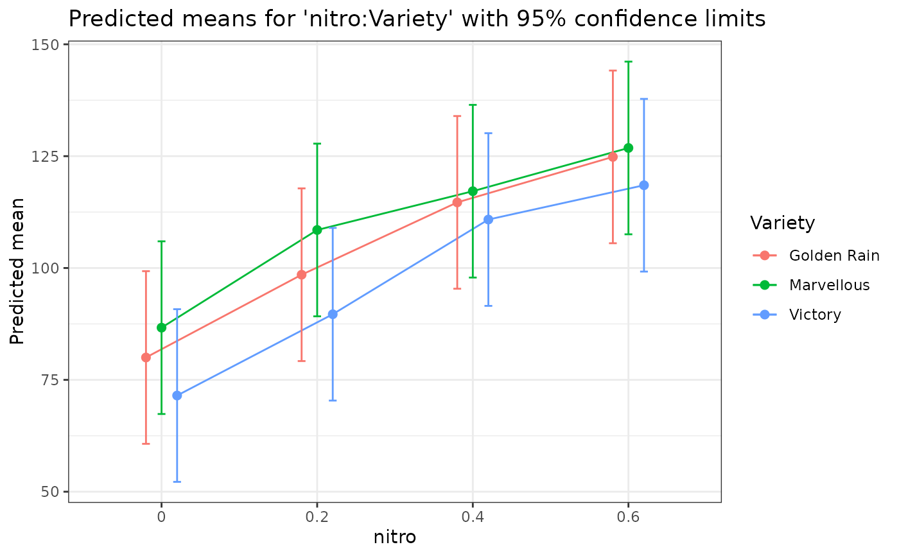
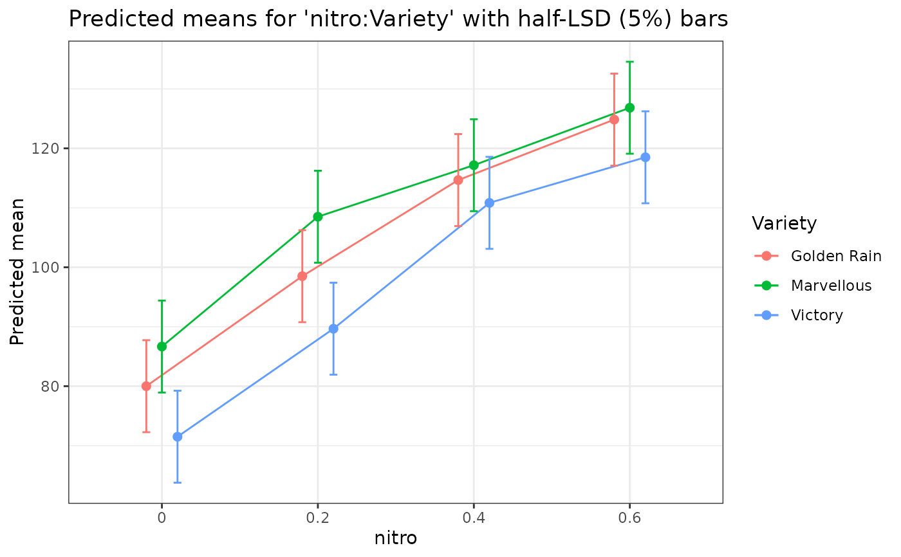
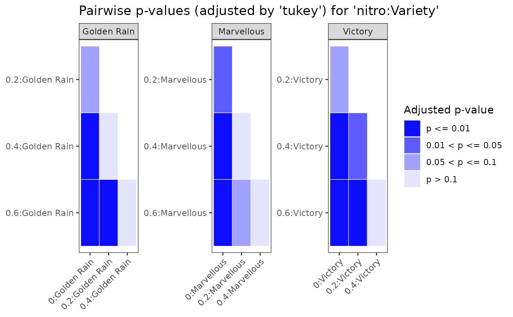

autoplot() draws the predicted means, their pairwise p-values or the back-transformed means of a
predictmeans result as a ggplot2 object. summary() prints the means with a footer that
states the degrees of freedom, the SED and LSD ranges, the p-value adjustment and the covariate values used.
Both are built from the means and pairs tables of the result: they do not compute statistics, open
graphics devices or print on their own, so they can be used in reports and Shiny apps
(e.g. renderPlot(autoplot(pm))) or made interactive with plotly::ggplotly().
Arguments
- object
A result of
predictmeans.- type
"means"(the default) plots the predicted means;"pvalue"a heatmap of the adjusted pairwise p-values (within each level ofatvarwhen it was given);"response"the back-transformed means.- interval
Bars around the means: confidence limits (
"ci", the default), half the average LSD ("lsd"; means whose bars do not overlap differ significantly when the LSDs are equal), or none.- digits
Number of significant digits printed (plus two).
- x
A result of
summary().- ...
Not used.
Value
autoplot() returns a ggplot object; summary() returns an object whose print method shows the
table and footer.
Examples
library(predictmeans)
Oats <- as.data.frame(nlme::Oats)
Oats$nitro <- factor(Oats$nitro)
fm <- lmer(yield ~ nitro*Variety + (1|Block/Variety), data = Oats)
pm <- predictmeans(fm, "nitro:Variety", atvar = "Variety", adj = "tukey", plot = FALSE)
summary(pm)
#> Predicted means for 'nitro:Variety' (lmerModLmerTest model; df: Kenward-Roger, Kenward-Roger adjusted SEs)
#> Confidence limits: 95%
#>
#> nitro Variety estimate std.error df conf.low conf.high group
#> 0 Golden Rain 80.00 9.107 16.08 60.70 99.3 A
#> 0 Marvellous 86.67 9.107 16.08 67.37 106.0 A
#> 0 Victory 71.50 9.107 16.08 52.20 90.8 A
#> 0.2 Golden Rain 98.50 9.107 16.08 79.20 117.8 AB
#> 0.2 Marvellous 108.50 9.107 16.08 89.20 127.8 B
#> 0.2 Victory 89.67 9.107 16.08 70.37 109.0 A
#> 0.4 Golden Rain 114.67 9.107 16.08 95.37 134.0 BC
#> 0.4 Marvellous 117.17 9.107 16.08 97.87 136.5 B
#> 0.4 Victory 110.83 9.107 16.08 91.54 130.1 B
#> 0.6 Golden Rain 124.83 9.107 16.08 105.53 144.1 C
#> 0.6 Marvellous 126.83 9.107 16.08 107.53 146.1 B
#> 0.6 Victory 118.50 9.107 16.08 99.20 137.8 B
#>
#> 18 pairwise comparisons within each level of Variety.
#> SED: min 7.683, mean 7.683, max 7.683
#> LSD (5%): min 15.47, mean 15.47, max 15.47
#> p-values: t tests, adjusted by 'tukey'.
#> Means sharing a letter are not significantly different at the 5% level within each level of Variety.
ggplot2::autoplot(pm)

ggplot2::autoplot(pm, interval = "lsd")

ggplot2::autoplot(pm, type = "pvalue")
